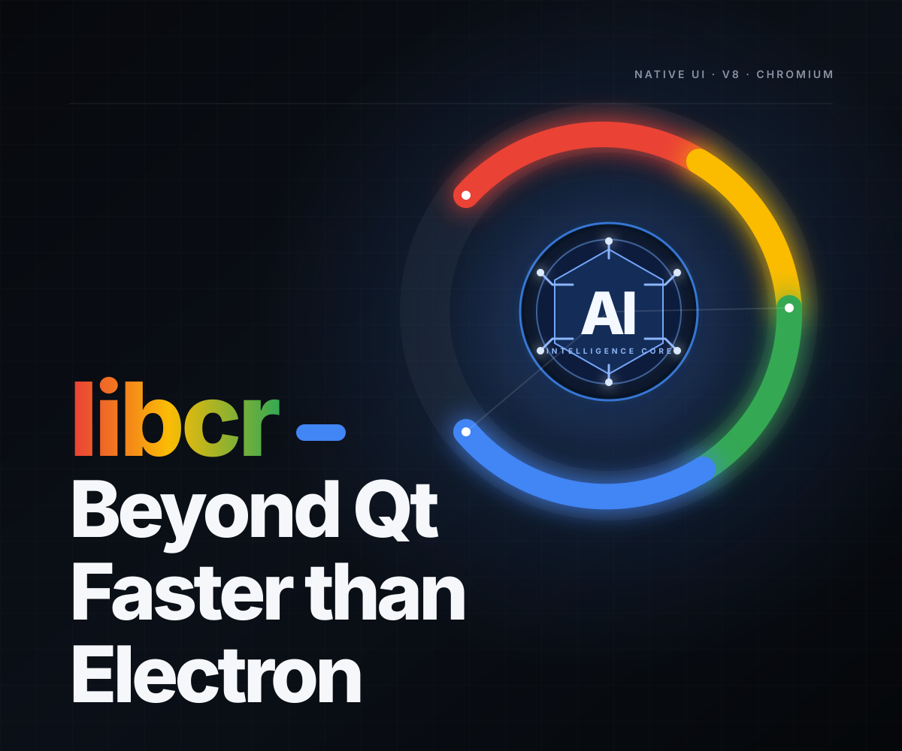

01
crScrcpy
设备控制流畅显示与控制 Android 设备。支持 H.264/H.265、低延迟音频、多设备会话、同步控制、无损 MP4 录制与强大的JS脚本控制能力
C++ × Chromium
在成熟的 Chromium 代码之上，我们用 libcr 原生应用开发包驱动 AI 高效制作功能丰富、稳定一致的原生应用。没有 Electron，没有多余的运行时
轻量设计：Linux 二进制30 MB+，Windows 45MB+实际大小取决于所选的 Chromium 组件

LIBCR的作品
从 Android 设备控制到开发者工具箱、PDF 阅读器和局域网共享应用，都是 libcr 的模范生，我们兼顾效率和性能
同时支持
流畅显示与控制 Android 设备。支持 H.264/H.265、低延迟音频、多设备会话、同步控制、无损 MP4 录制与强大的JS脚本控制能力
技术基础
以 Chromium 为底座，按需组合 Blink、Skia、网络、媒体、GPU、Crashpad、V8 与 Mojo 等成熟模块，并在源码层灵活裁剪、替换与扩展，构建面向未来的高性能应用
01 target("native_desktop_app") {
02 runtime = "C++";
03 interface = chromium.views;
04 services = [
05 network_service,
06 media_pipeline,
07 pdfium,
08 mojo
09 ];
10 // No Electron required.
11 }直接作为 Chromium 原生目标构建，无额外桌面运行时。
成熟支持 HTTP/1.1、HTTP/2、HTTP/3、QUIC 与 TLS。
基于统一的 Chromium 技术体系，面向 Windows、macOS 与 Linux 构建一致的应用体验。
涵盖 GPU 渲染、网络、媒体、图形、JavaScript 与进程通信等可按需组合与扩展的成熟模块。
架构对比
libcr 是 AI 驱动、使用强大 Chromium 代码模块的原生应用开发包。我们将持续更新，让稳定、高效的原生应用开发成为现实
libcr / Qt 6
更适合网络密集、媒体丰富、JavaScript 驱动、GPU 加速与安全敏感的软件。
原生 UI、图形、网络、媒体、JavaScript、IPC、安全和诊断融于同一平台。
Views、Skia、cc、Viz 与 GPU 服务协同支持合成、动画、局部重绘和高刷新率。
Mojo 提供强类型异步 IPC、共享内存、数据管道、句柄传递与故障隔离。
Skia、Dawn、ANGLE、SharedImage 和 Viz 支持 WebGPU、硬件加速与跨进程纹理共享。
内建 HTTP/1.1、HTTP/2、HTTP/3、QUIC、TLS、DNS、代理、缓存与网络隔离。
覆盖编解码、音画同步、采集、录制、流媒体、WebRTC 与 GPU 视频处理。
直接使用 V8、WebAssembly、Blink、WebContents、Service Workers 与 DevTools。
渲染器、GPU、网络与工具进程沙箱，结合站点隔离和严格 IPC 边界。
SharedImage、Mailbox、SyncToken 与 GPU 内存缓冲区减少大数据和纹理复制。
Perfetto、网络与媒体日志、帧诊断、内存分析、指标和 Crashpad 一应俱全。
Chromium、Skia、ANGLE 与 Dawn 持续覆盖主流系统、GPU、驱动、摄像头和编解码器。
尤其适合浏览器、媒体播放器、远程桌面、设备控制、AI Agent 与 GPU 密集型应用。
libcr / Electron
比 Electron 更小。原生设计。由 Chromium 驱动。
省去 Node.js、Electron 兼容层和非必要浏览器资源，只打包应用需要的模块。
原生 Views 与 C++ 减少 JavaScript 框架、Web 资源、后台进程和内存层级。
Chromium Views 无需 HTML、CSS 或前端框架，带来直接事件处理和可预测性能。
无需初始化 Node.js、加载前端框架、解析页面资源或执行庞大的 JavaScript 包。
直接集成 base、Views、Skia、Viz、Mojo、net、QUICHE、Media、PDFium、V8、Dawn 与 ANGLE。
按需使用 V8 和 JavaScript 扩展能力，不必暴露 Node API 或携带其依赖。
C++ 直接调用核心模块，减少 JS、Node、预加载脚本与渲染进程之间的序列化和切换。
用 Mojo 按需设计浏览器、GPU、网络、媒体与工具进程，而非受限于固定模型。
只暴露明确批准的原生接口，以沙箱服务和受限 V8 绑定缩小攻击面。
直接使用 Skia、SharedImage、Viz、硬件解码、Chromium Media、Dawn 与 ANGLE。
原生界面无需 React、Vue、Angular、webpack、Vite 或庞大的 npm 依赖。
UI、网络、媒体与文件处理关键路径留在 C++，JavaScript 只在合适之处使用。
适合高吞吐文件、设备管理、硬件视频、低延迟输入、系统集成和后台任务。
从 Chromium 源码选择或移除功能、编解码器、服务、资源与平台组件。
以原生性能、架构控制、精简依赖和 Chromium 底层能力为优先。
加入群组
加入 Telegram 或 QQ 群，获得支持、关注最新动态，并与开发者保持联系